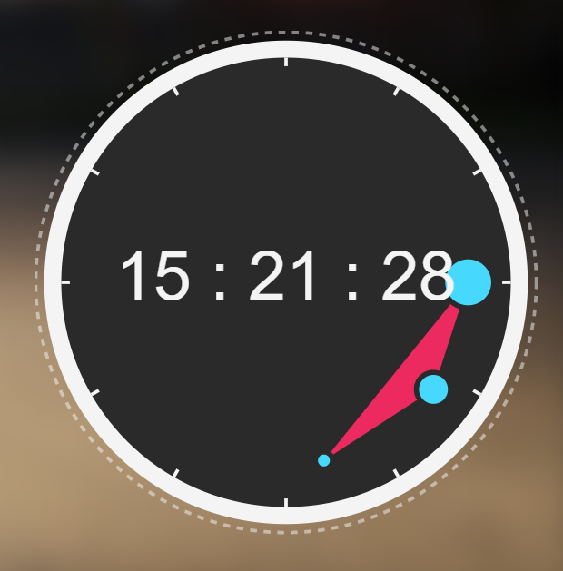

APP的表现形式不仅仅可以是一个个窗口，还可以为动态壁纸，小工具，后台服务等，取决于开发者的想象力。
下面我们将以几个特殊APP为例，探索如何利用APP的高级特性。
便签用于快速记录信息，设计为一个小窗口，自启动于屏幕右上角。
便签作为小工具，需要低调。设置plugin:true，默认隐藏标题栏
每次启动自动出现在右上角，设置上对齐，右对齐，偏移4px
自启动级别设置为2
不需要用户改动url，设置地址栏默认隐藏addressBar: false
固定一个合适的尺寸宽度250px，高度320px
完整的便签APP数据
"plugin-note": {
"addressBar": false,
"autoRun": 2,
"background": false,
"badge": 0,
"desc": "",
"icon": {
"type": "fa",
"bg": "orange",
"content": "sticky-note-o"
},
"openMode": "normal",
"plugin": true,
"position": {
"x": "4",
"y": "4",
"left": false,
"top": true,
"autoOffset": false
},
"poweredBy": "Yuri2",
"resizable": true,
"single": true,
"size": {
"width": 250,
"height": 326
},
"title": "便签",
"url": "./res/apps/note/index.html",
"customTile": ""
}类似于便签，但是时钟不需要交互操作，可以变得更低调。

我们希望用户根本不会触碰到它，设置background:true开启背景模式，让这个时钟成为一个背景装饰。
完整的时钟APP数据
"plugin-clock": {
"addressBar": true,
"autoRun": 2,
"background": true,
"badge": 0,
"desc": "",
"icon": {
"type": "fa",
"bg": "rgb(238,37,96)",
"content": "clock-o"
},
"openMode": "normal",
"plugin": true,
"position": {
"left": false,
"top": false,
"x": "0",
"y": "0"
},
"poweredBy": "unknown",
"resizable": true,
"single": true,
"size": {
"width": 336,
"height": 383
},
"title": "创意时钟",
"url": "./res/apps/React Morph Clock/index.html",
"customTile": ""
} 那么动态壁纸的特性是什么？
结合上述两个例子，你是否能写出一个动态壁纸的APP数据？
位于最底层意味着该APP的启动顺序要足够靠前，它优先启动，后启动的的APP才能正确的覆盖在它上方。